Disciplina: Eletrônica de Potência II
Aluno: Mateus Salgado Barboza Costa
Professor: Joabel Moia
Data: 26/08/2026
Aplicar a metodologia de projeto de conversores estáticos apresentada na Aula 3 (17/08/2026) ao conversor Buck especificado, realizando a pré-escolha e a escolha final do transistor, do diodo e do capacitor de saída, calculando as perdas no transistor e especificando dissipadores, quando necessário.
| Grandeza | Valor |
|---|---|
| Tensão de entrada, Vin | 36 V |
| Tensão de saída, Vo | 12 V |
| Potência de saída, Po | 100 W |
| Frequência de comutação, fs | 50 kHz |
| Indutância, L | 100 µH |
Adotou-se regime permanente, modo de condução contínua (MCC) e carga puramente resistiva. Seguindo a recomendação da aula de sempre fazer o projeto para pior caso, os semicondutores foram pré-selecionados com tensão de bloqueio mínima de 2×Vin = 72 V (classe comercial de 100 V) e correntes com margem sobre o pico calculado. Para o cálculo térmico foram adotados Ta = 40 °C, meta conservadora Tj,proj = 125 °C e interface cápsula-dissipador com pasta térmica, RθCS = 0,5 °C/W.
A aula descreve a seguinte sequência para a pré-escolha dos semicondutores, seguida neste relatório:
Para o capacitor de saída, a aula lista seis critérios de dimensionamento, capacitância mínima (a partir de ΔVo e ΔiL), tensão máxima, corrente eficaz máxima, faixa de temperatura, perdas na resistência série equivalente (RSE) e custo/volume.
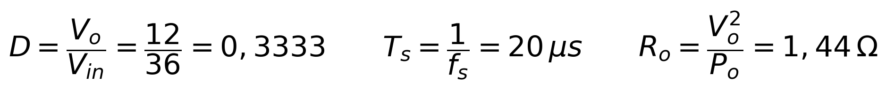
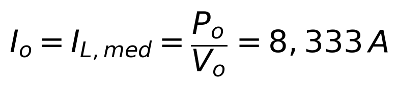
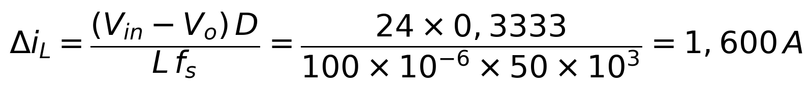
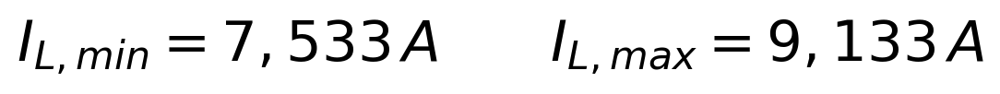
Como IL,min > 0, confirma-se o MCC.
| Componente | Corrente média | Corrente eficaz | Corrente de pico | Tensão de bloqueio |
|---|---|---|---|---|
| Transistor | 2,778 A | 4,819 A | 9,133 A | 36 V |
| Diodo | 5,556 A | 6,815 A | 9,133 A | 36 V |
| Capacitor | 0 A | 0,462 A | ±0,8 A | — |
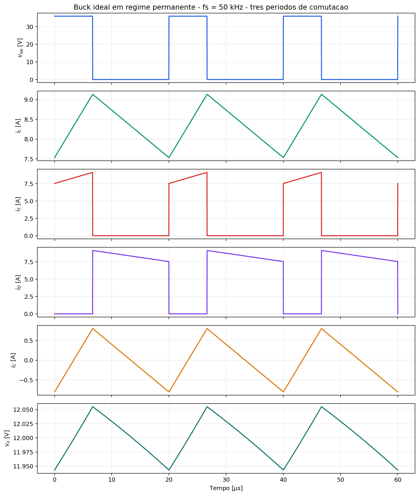
Figura gerada por calculos_buck.py (numpy/matplotlib, mesmo padrão gráfico da Tarefa 01). O painel de vo já usa o capacitor escolhido na Seção 9 (1000 µF / 70 mΩ), evidenciando o formato de "dente de serra com degraus" típico de uma ondulação dominada pela RSE.
Aplicando margem de pior caso (tensão ≥ 2×Vin; corrente ≥ ~1,3× o valor de pico/médio calculado):
| Requisito | Transistor | Diodo |
|---|---|---|
| Tensão de bloqueio mínima | 72 V → classe 100 V | 72 V → classe 100 V |
| Corrente contínua mínima | > 9,1 A (pico) | > 7,2 A (médio, c/ margem) |
| Encapsulamento | TO-220, para reaproveitar o método térmico da Tarefa 01 | TO-220 |
Candidatos considerados (fabricantes recomendados pela Aula 3: Infineon, Vishay, ST, ON Semi):
O IRLZ44N é eliminado nesta etapa: seu VDS máximo é 55 V, abaixo dos 72 V exigidos pelo critério de pior caso (Vin pode variar na prática). Ele é mantido nas tabelas apenas como referência comparativa com a Tarefa 01.
| Parâmetro | IRLZ44N¹ | IRF540N² | IPP039N10N5³ |
|---|---|---|---|
| VDS máx | 55 V ⚠ | 100 V | 100 V |
| RDS(on) máx @ VGS=10 V | 22 mΩ | 44 mΩ | 3,9 mΩ |
| ID máx | 47 A | 33 A | 100 A |
| Qg total | 63 nC | 71 nC | 76 nC |
| tr / tf | 26 / 11 ns | 35 / 35 ns | 10 / 17 ns |
| RθJC | 1,4 °C/W | 1,15 °C/W | 0,5 °C/W |
| Tecnologia | Planar (obsoleto) | Planar (HEXFET) | Trench (OptiMOS 5) |
¹ Vishay S21-1045; ² Infineon PD-94812; ³ Infineon Rev. 2.0, 2016-11-22 — ver Referências.
O IPP039N10N5 é uma peça de corrente nominal bem acima da nossa aplicação (100 A vs. 9,1 A de pico); ainda assim foi escolhido porque sua tecnologia trench moderna reduz RDS(on) em 11× e os tempos de comutação em ~3× comparando ao IRF540N, sem custo relevante em Qg. Isso ilustra o ponto da Aula 3 de que a escolha não deve travar apenas na corrente nominal, mas nas figuras de mérito RDS(on)×Qg e no cálculo de perdas real (Seção 7).
IPP039N10N5 (Infineon OptiMOS 5, TO-220) — atende com folga a tensão, corrente e apresenta a menor perda estimada entre os candidatos, como mostrado a seguir. O IRF540N é mantido como comparação por ser um padrão de mercado amplamente disponível.
Metodologia idêntica à Tarefa 01: fator térmico kT = 1,7 aplicado ao RDS(on) de datasheet (25 °C) para estimar a condução em Tj,proj = 125 °C; comutação avaliada com a corrente de pico (pior caso) e tensão de bloqueio igual a Vin.
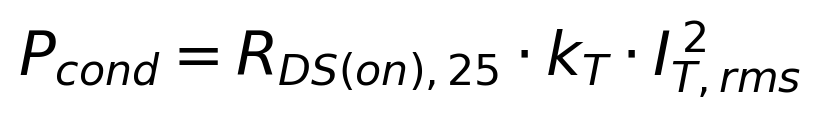
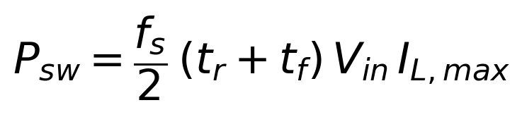
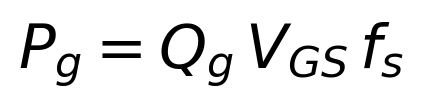
| Componente | Pcond | Psw | Pg | Ptotal |
|---|---|---|---|---|
| IRLZ44N (referência, VDS insuficiente) | 0,868 W | 0,304 W | 0,032 W | 1,204 W |
| IRF540N | 1,737 W | 0,575 W | 0,036 W | 2,348 W |
| IPP039N10N5 (escolhido) | 0,154 W | 0,222 W | 0,038 W | 0,414 W |
A troca do IRF540N pelo IPP039N10N5 reduz a perda total em cerca de 5,7× (2,35 W → 0,41 W), principalmente pela redução de RDS(on) (queda de 92% na perda de condução, o termo dominante neste conversor, já que D = 33% mantém o transistor conduzindo por um terço do período com corrente elevada).
| Parâmetro | MUR860¹ | MBR20100CT² | STPS20H100C³ |
|---|---|---|---|
| Tecnologia | Ultrarrápido (Si) | Schottky | Schottky |
| VRRM | 600 V | 100 V | 100 V |
| IF(AV) | 8 A | 2×10 A | 2×10 A |
| VF (10 A, 25 °C) | ~1,2 V (150 °C) | 0,65 V (típ.) | 0,77 V |
| Qrr | 195 nC | — (Schottky) | — (Schottky) |
| RθJC | 2,0 °C/W | 2,0 °C/W por perna | 0,9 °C/W por perna |
| Tj máx | 175 °C | 150 °C | 175 °C |
¹ dado usado na Tarefa 01; ² Vishay MBR20xxxCT-E3; ³ ST DS5386 Rev. 7 — ver Referências.
O diodo é o componente mais crítico termicamente no Buck: ele conduz 66,7 % do período (1 − D), contra apenas 33,3 % do transistor, resultando em corrente eficaz maior (6,815 A vs. 4,819 A).
| Diodo | Modelo | Pcond | RθJC efetivo |
|---|---|---|---|
| MUR860 | VF constante + Qrr·Vin·fs | 6,667 + 0,351 = 7,018 W | 2,0 °C/W |
| MBR20100CT | VF constante (único ponto de datasheet) | 3,611 W | 2,0 °C/W |
| STPS20H100C, um terminal | V₀=0,55 V, Rd=9 mΩ (ajuste @125 °C) | 3,474 W | 0,9 °C/W |
| STPS20H100C, ânodos em paralelo | idem, corrente dividida nas duas pernas internas | 3,265 W | 0,45 °C/W |
Seguindo a mesma prática adotada com o MBR20100CT na Tarefa 01, os dois ânodos internos do STPS20H100C (cátodo comum) foram ligados em paralelo. O ganho em perda é modesto (~6 %, pois só o termo resistivo Rd é dividido), mas o RθJC efetivo cai pela metade, o que folga bastante o dimensionamento do dissipador (Seção 10).
STPS20H100C (ST), com os dois ânodos internos em paralelo, menor perda total, menor RθJC efetivo e maior margem de temperatura de junção (175 °C) que as demais opções.
Seguindo os seis critérios da Aula 3 (capacitância mínima, tensão máxima, corrente eficaz máxima, faixa de temperatura, perdas na RSE, custo/volume):
Meta de ondulação de saída: ΔVo ≤ 1 % de Vo = 120 mV.
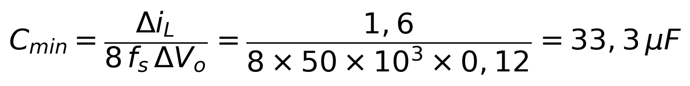
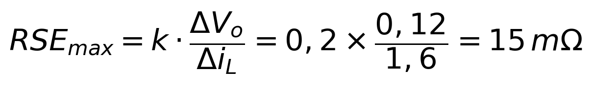
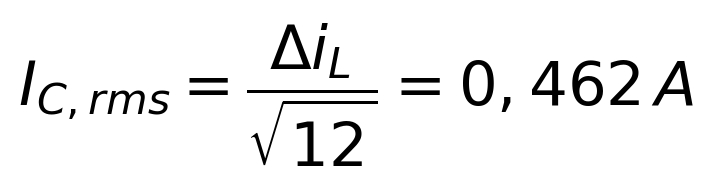
Adotando margem de 1,5 a 2× Vo para a tensão do capacitor: VC ≥ 25 V.
Nichicon UPW1E102MHD — 1000 µF / 25 V, série de baixa impedância (ESR = 70 mΩ típ. @ 100 kHz/20 °C, corrente de ripple 1,66 A @ 105 °C, vida útil 7000 h @ 105 °C).
| Grandeza | Valor |
|---|---|
| ΔVo (parcela capacitiva, isolada) | 4,0 mV |
| ΔVo (parcela da RSE, isolada) | 112,0 mV |
| ΔVo total, soma das parcelas (estimativa conservadora) | 116,0 mV |
| ΔVo total, forma de onda simulada (Fig. da Seção 4) | 112,0 mV (0,93 % de Vo) |
| Folga de corrente de ripple | 1,66 A / 0,462 A ≈ 3,6× |
| PRSE | 14,9 mW (desprezível) |
O capacitor atende à meta de 1 % mesmo sem RSE dedicada abaixo de 15 mΩ, porque o valor de 1000 µF (muito acima do Cmin de 33,3 µF) já é suficiente para trazer a ESR típica da série para 70 mΩ. Como a temperatura ambiente de projeto (40 °C) e a corrente de ripple real estão bem abaixo dos valores nominais do capacitor (105 °C / 1,66 A), a vida útil esperada em operação é várias vezes maior que as 7000 h de catálogo.
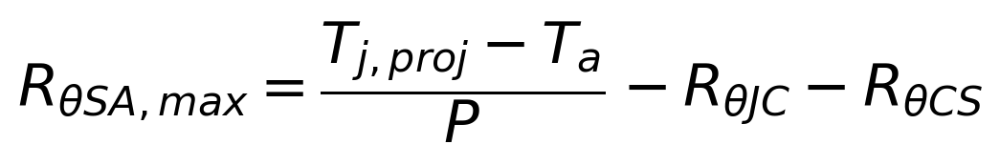
Com Tj,proj=125 °C, Ta=40 °C, RθCS=0,5 °C/W.
| Valor | |
|---|---|
| Perda total | 0,414 W |
| RθJA requerido (sem dissipador) | 205,4 °C/W |
| RθJA de catálogo (TO-220, ao ar livre) | 40–62 °C/W |
Como o RθJA natural do encapsulamento (40–62 °C/W) já é muito menor que o requerido (205,4 °C/W), o transistor dispensa dissipador.
| Valor | |
|---|---|
| Perda total | 3,265 W |
| RθJC efetivo | 0,45 °C/W |
| RθSA,max requerida | 25,1 °C/W |
O diodo necessita de dissipador: RθSA,max = 25,1 °C/W é uma exigência moderada. A simulação no Power Stage Designer 5 (Seção 11.4) confirma essa exigência, com folga ligeiramente maior (27,3 °C/W).
Dissipador recomendado: Same Sky HSE17-252525P (mesmo modelo avaliado na Tarefa 01 para o MBR20100CT):
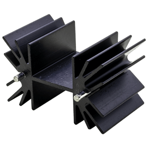
Figura 10.1: Same Sky HSE17-252525P, dissipador recomendado para o diodo STPS20H100C.
Alternativa com mais margem: Same Sky HSE15-644225P:
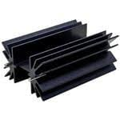
Figura 10.2: Same Sky HSE15-644225P, alternativa com maior margem térmica.
Perda de 14,9 mW, sem dissipador.
| Componente | Perda (W) | Dissipador necessário? |
|---|---|---|
| Transistor IPP039N10N5 | 0,414 | Não |
| Diodo STPS20H100C (paralelo) | 3,265 | Sim — Same Sky HSE17-252525P |
| Capacitor Nichicon UPW1E102MHD | 0,015 | Não |
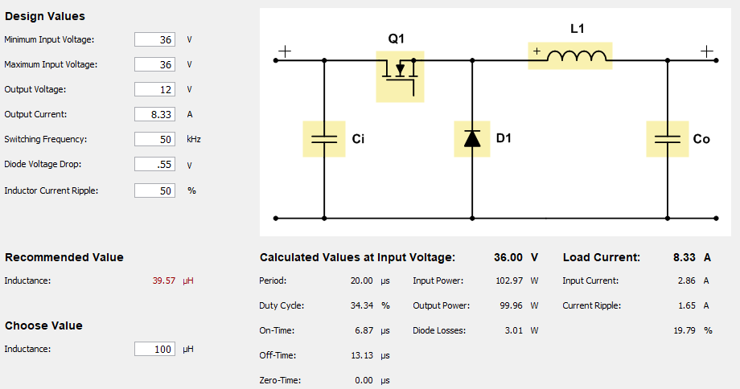
Figura 11.1: Topologia Buck e valores de projeto calculados pelo PSD5.
| Grandeza | Teórico (Seção 4) | PSD5 | Δ (%) |
|---|---|---|---|
| Vo médio | 12,000 V | 12,00 V | 0,0 % |
| Duty cycle | 33,33 % | 34,34 % | +3,0 % (PSD5 inclui Vf do diodo) |
| IL médio | 8,333 A | 8,33 A | −0,04 % |
| ΔiL pico a pico | 1,600 A | 1,65 A | +3,1 % |
| IL,rms | 8,346 A | 8,34 A | −0,07 % |
| IT,rms | 4,819 A | 4,89 A | +1,5 % |
| ID,rms | 6,815 A | 6,76 A | −0,8 % |
| IC,rms | 0,462 A | 0,476 A | +3,0 % |
| P_transistor (IPP039N10N5) | 0,414 W | 0,50 W | +20,8 % |
| P_diodo (STPS20H100C) | 3,265 W | 3,01 W | −7,8 % |
| ΔVo pico a pico | 112,0 mV | não avaliável | — |
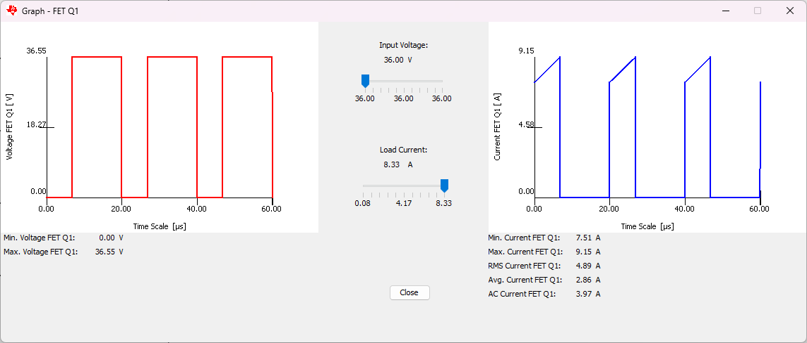
Figura 11.2: Tensão e corrente no transistor Q1 (PSD5).
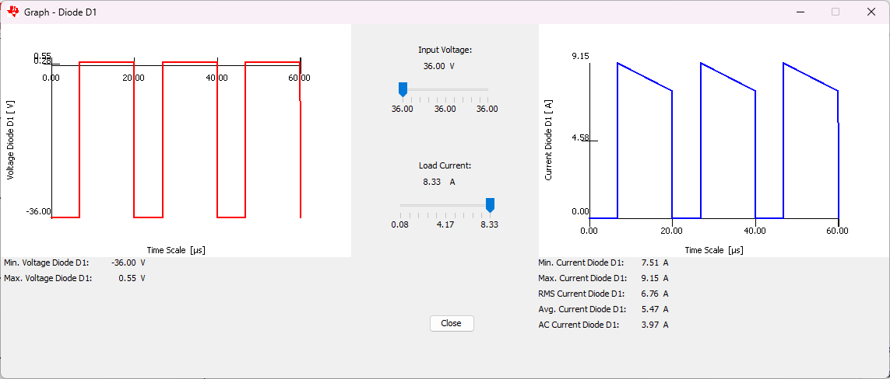
Figura 11.3: Tensão e corrente no diodo D1 (PSD5).
Todos os esforços de corrente/tensão (IL, IT,rms, ID,rms, IC,rms) ficaram a menos de 3,1 % de diferença do cálculo analítico da Seção 4.
O FET Losses Calculator do PSD5 permite comparar dois FETs lado a lado sob a mesma condição de acionamento (VGS = 10 V, Rg,total = 5 Ω — mesma resistência de gate para os dois, para uma comparação justa):
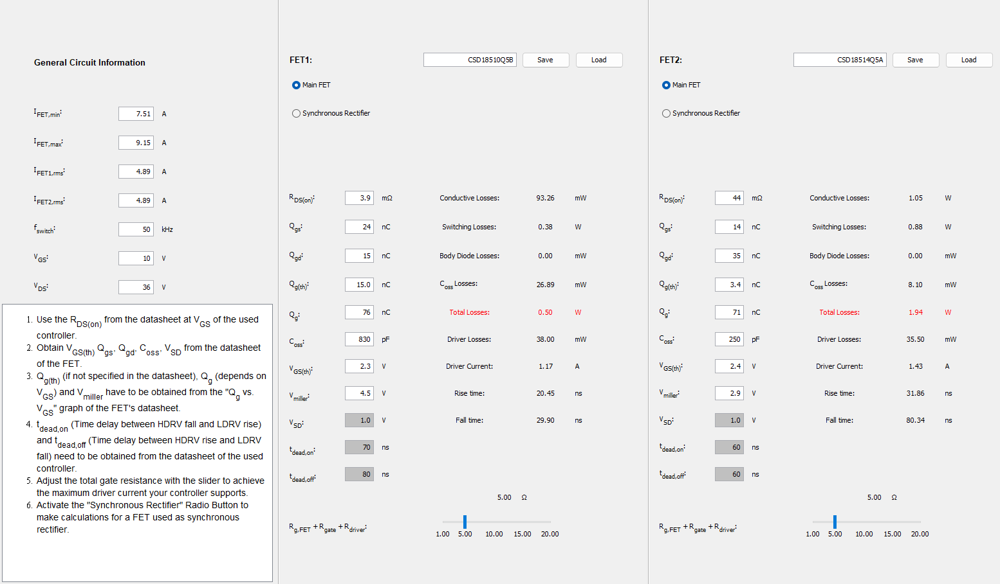
Figura 11.4: FET Losses Calculator do PSD5 — IPP039N10N5 (esquerda) vs IRF540N (direita).
| Parcela de perda | IPP039N10N5 (escolhido) | IRF540N (comparação) |
|---|---|---|
| Condução | 93,3 mW | 1,05 W |
| Comutação | 0,38 W | 0,88 W |
| Coss | 26,9 mW | 8,1 mW |
| Driver (gate) | 38,0 mW | 35,5 mW |
| Total | 0,50 W | 1,94 W |
Sob acionamento idêntico, o IPP039N10N5 dissipa ≈3,9× menos que o IRF540N, confirma de forma independente, com outra ferramenta, a escolha de transistor justificada na Seção 6.
Repetindo o cálculo da Seção 10 com as perdas medidas no PSD5:
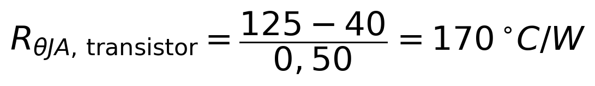
≫ 40–62 °C/W de catálogo ⇒ ainda dispensa dissipador.
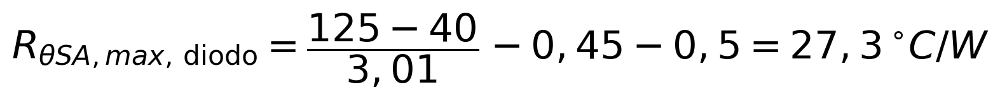
vs. 25,1 °C/W calculado — exigência praticamente igual, levemente mais folgada.
As conclusões da Seção 10 permanecem válidas: o transistor dispensa dissipador com folga ainda maior que a calculada, e o diodo continua exigindo um dissipador compacto (agora com ≈27 °C/W de margem em vez de 25 °C/W).
A aplicação da metodologia da Aula 3 (pré-escolha por tensão/corrente de pior caso → verificação de características estáticas e dinâmicas → cálculo de perdas → dimensionamento térmico) resultou na escolha do MOSFET IPP039N10N5, do diodo Schottky STPS20H100C (ânodos em paralelo) e do capacitor eletrolítico Nichicon UPW1E102MHD (1000 µF/25 V).
O resultado mais relevante do projeto é a assimetria térmica entre transistor e diodo: como o diodo conduz o dobro do tempo do transistor (1 − D = 66,7 % contra D = 33,3 %) e não se beneficia da baixíssima queda resistiva de um MOSFET moderno, ele concentra a maior parte das perdas (3,01–3,27 W contra 0,41–0,50 W) e é o único semicondutor que exige dissipador. A escolha de um MOSFET de tecnologia trench moderna, por outro lado, eliminou completamente a necessidade de dissipador no transistor, um ganho direto de custo, volume e simplicidade de montagem frente à alternativa clássica (IRF540N), que teria quase 4× mais perdas e exigiria dissipador. O capacitor de saída, dimensionado pelo critério de RSE (e não apenas de capacitância, conforme ensinado na aula), atende à meta de 1 % de ondulação com folga de corrente de ripple superior a 3×.
A validação numérica prevista na etapa 5 do método (Seção 11) foi feita no Power Stage Designer 5, com todos os esforços de corrente e tensão confirmados a menos de 3,1 % do cálculo analítico, e as perdas dentro da mesma ordem de grandeza (diferenças de 8–21 %, explicadas pelos diferentes modelos de comutação empregados). As conclusões de dimensionamento térmico (Seção 10) permanecem válidas após a validação.